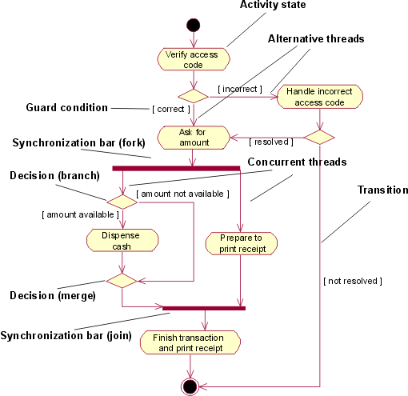

| Guideline: Activity Diagram in the Use-Case Model |
 |
|
| Related Elements |
|---|
The flow of events of a use case describes what needs to be done by the system to provide value to an actor. It consists of a sequence of tasks that together produce something for the actor. The flow of events consists of a basic flow, and one or several alternative flows. The flow of events of a use case can be described graphically with the help of an activity diagram. Such a diagram shows:
 A simplified activity diagram for the use case Withdraw Money in the use-case model of an automated teller machine (ATM). Activity diagram is a special case of a statechart diagram in which all or most of the states are activity states and in which all or most of the of the transitions are triggered by completion of actions in the source states. |
© Copyright IBM Corp. 1987, 2016 All Rights Reserved |